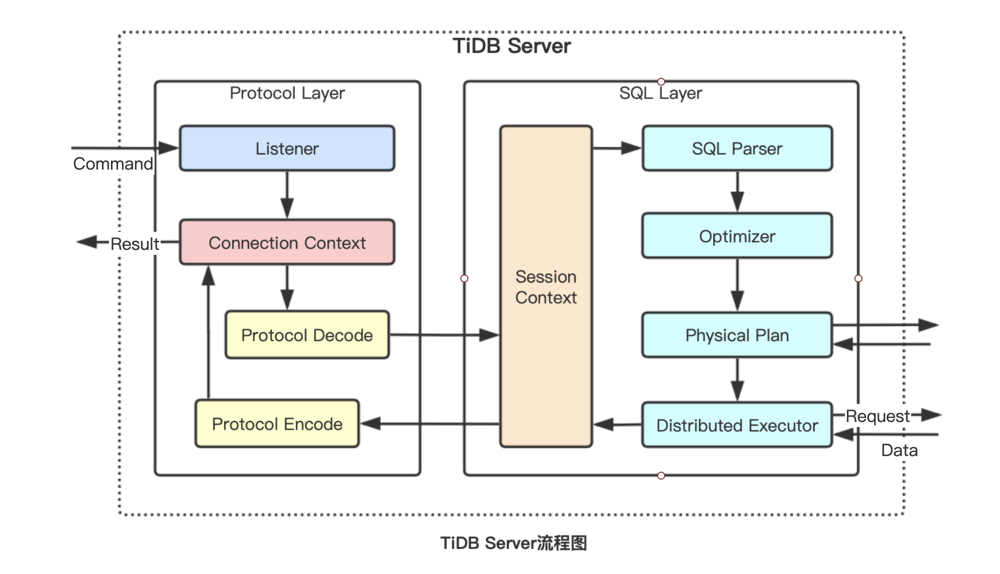

TiDB
一、简介
黄东旭，开源分布式缓存服务 Codis 的作者，PingCAP 联合创始人兼CTO，擅长分布式存储系统的设计与实现，开源技术大佬。在2012年看到Google发布的两篇关于海量关系型数据库的论文，产生了灵感，于是 TiDB 就此诞生。
TiDB，是一个分布式 NewSQL 数据库。支持水平弹性扩展、ACID事务、标准SQL、MySQL语法和MySQL协议，具有数据强一致的高可用特性，是一个不仅适合 OLTP 场景还适 OLAP 场景的混合数据库。
基于Go语言实现。
二、特点&优势
1）金融级高可用
基于 Raft 的多数派选举协议，实现故障的自愈，支持跨城多机房容灾，多中心容灾方案，同城两中心异地一中心，或者三地五中心模式，数据零丢失，可满足金融行业6级容灾标准（RPO=0，RTO<=30秒）。
2）线性扩展
透明扩展，自动负载均衡，应用透明的水平扩展，具备接近无限的水平扩展能力。伸缩操作后，数据库还可以自动实现数据再均衡。数据量可达 PB 级，单表记录万亿行。(1PB=1024TB)
3）MySQL兼容性
兼容 MySQL5.7协议 和 MySQL生态。大多数情况下，无需修改代码轻松把数据从MySQL迁移到TiDB。
4）分布式事务
100% 支持标准的 ACID 事务。
5）实时HTAP
作为典型的 OLTP 行存数据库，同时兼具强大的 OLAP 性能，配合 TiSpark，可提供一站式 HTAP 解决方案，一份存储同时处理 OLTP & OLAP，无需传统繁琐的 ETL 过程。
扩展知识：
容灾系统7个级别：0级-无异地备份，1级-实现异地备份，2级-热备份站点备份，3级-在线数据恢复，4级-定时数据备份，5级-实时数据备份，6级-零数据丢失
RPO：(Recovery Point Objective，复原点目标)。企业的损失容限，在对业务造成重大损害之前可能丢失的数据量。这个目标值决定了丢失多少数据。如果定期24小时增量备份，那么最坏情况下，将失去24小时的数据。
RTO：(Recovery Time Objective，复原时间目标)。灾难发生后，从IT系统宕机导致业务停顿之时开始，到IT系统恢复至可以支持各部门运作、恢复运营之时，此两点之间的时间段称为RTO。这个目标值决定了业务中断多长时间。比如说灾难发生后半天内便需要恢复，RTO值就是十二小时
ACID事务：原子性（Atomicity）、一致性（Consistency）、隔离性（Isolation）、持久性（Durability）
HTAP、OLTP、OLAP：https://blog.csdn.net/ZG_24/article/details/87854982
三、、应用场景
1、MySQL遇到单机容量或者性能瓶颈
2、大数据量下，数据增长很快，接近单机处理的极限，不想分库分表或使用数据库中间件等对业务侵入性较大，同时对业务有约束的Sharding方案
3、大数据量下，有高并发实时写入、查询、统计分析的需求
4、有分布式事务、多数据中心的数据 100% 强一致性、auto-failover 的高可用的需求
当然，如果业务量小，单机都能满足，那就没必要使用TiDB了。换个说法，数据量没有达到千万级别，也是没必要的。
四、结构


TiDB主要分为三部分：
- TiDB Server：负责接收SQL请求，处理SQL相关的逻辑，并通过PD找到存储计算所需数据的TiKV地址，与TiKV交互获取数据，最终返回结果。TiDB Server 是无状态的，其本身并不存储数据，只负责计算，可以无限水平扩展，可以通过负载均衡组件（LVS、HAProxy或F5）对外提供统一的接入地址。
- TiKV Server：负责存储数据，从外部看 TiKV 是一个分布式的提供事务的 Key-Value 存储引擎。
- PD Server：是整个集群的管理模块，其主要工作有三个：一是通过TiKV节点上报的心跳包，检测节点是否存活，是否有新加节点，以及存储节点状态信息（总容量、可用容量、承载Region数量、数据写入速度、是否过载、snapshot等）；二是通过Raft group的leader上报的心跳包，收集Region状态（leader位置、follower位置、掉线Replica个数、读写速度），以便对TiKV集群进行调度和负载均衡（如数据的迁移、Raft group leader的迁移等）；三是分配全局唯一且递增的事务ID。PD是一个集群，需要部署奇数个节点，一般线上推荐至少部署3个节点。
五、兼容性区别
| TiDB | MySQL | |
|---|---|---|
| 自增ID | 可以保证唯一，但不一定连续 | 唯一且连续 |
| Performance schema | 不支持，使用 Prometheus 和 Grafana 来存储及查询相关的性能监控指标 | 支持 |
| EXPLAIN/EXPLAIN FOR | TiDB输出格式、内容、权限设置与MySQL差别很大 | |
| 内建函数 | TiDB支持常用的MySQL内建函数，但仍有部分不支持的 | |
| DDL | 在TiDB中，运行的DDL操作不会影响对表的读取或写入，但DDL操作有限制 | |
| 视图 | 不支持增删改 | 支持增删改 |
| 存储引擎 | 建表时语法兼容，实际统一落地为InnoDB | 支持 |
| SQL 模式 | 支持大部分SQL模式 | 支持 |
参考：https://www.shujukuba.com/tidb/931.html
六、安装
一）源码安装
1、下载安装包，并解压到/usr/local
xxxxxxxxxx21$ wget http://download.pingcap.org/tidb-latest-linux-amd64.tar.gz2$ tar zxvf tidb-latest-linux-amd64.tar.gz -C /usr/local2、启动pd
xxxxxxxxxx51$ cd /usr/local/tidb-v5.0.1-linux-amd642$ ./bin/pd-server --data-dir=/data/pd --log-file=/data/logs/pd.log &3
4# 检查是否启动成功5$ ps -ef|grep pd-server3、启动tikv
xxxxxxxxxx41$ ./bin/tikv-server --pd="127.0.0.1:2379" --data-dir=/data/tikv --log-file=/data/logs/tikv.log &2
3# 检查是否启动成功4$ ps -ef|grep tikv-server4、启动tidb
xxxxxxxxxx41$ ./bin/tidb-server --store=tikv --path="127.0.0.1:2379" --log-file=/data/logs/tidb.log &2
3# 检查是否启动成功4$ ps -ef|grep tidb-server5、测试是否可以连接
xxxxxxxxxx81$ mysql -h 127.0.0.1 -P 4000 -u root -D test2
3# 参数说明：4# -h tidb地址，或者是集群LoadBalancer的地址5# -P 端口号，一般是40006# -u 登录的用户名7# -D 指定数据库。也可以进去后再选8# -p 登录密码
二）单机docker安装
1、部署一个机器上，规划如下：
| 主机名 | IP | 部署服务 |
|---|---|---|
| node1 | 192.168.1.109 | pd & tidb & tikv |
2、前置条件
- Linux/macOS/Windows系统下
- 已安装Docker环境
3、在docker上拉取 TiDB 的Docker镜像，3个主要服务组件：TiDB、TiKV、PD
xxxxxxxxxx31$ docker pull pingcap/tidb:latest2$ docker pull pingcap/tikv:latest3$ docker pull pingcap/pd:latest4、按顺序启动PD、TiKV、TiDB
xxxxxxxxxx391# pd2docker run -d --name pd \3 -p 2379:2379 \4 -p 2380:2380 \5 -v /etc/localtime:/etc/localtime:ro \6 -v /data/server/pingcap/tidb:/tidb \7 -v /data/server/pingcap/tidb/pd/logs:/logs \8 pingcap/pd:latest \9 --name="pd1" \10 --data-dir="/tidb/pd" \11 --log-file="/logs/pd.log" \12 --client-urls="http://0.0.0.0:2379" \13 --peer-urls="http://0.0.0.0:2380" \14 --advertise-client-urls="http://192.168.1.109:2379" \15 --advertise-peer-urls="http://192.168.1.109:2380" \16 --initial-cluster="pd1=http://192.168.1.109:2380"17
18# tikv19docker run -d --name tikv \20 -p 20160:20160 \21 --ulimit nofile=1000000:1000000 \22 -v /etc/localtime:/etc/localtime:ro \23 -v /data/server/pingcap/tidb:/tidb \24 pingcap/tikv:latest \25 --addr="0.0.0.0:20160" \26 --advertise-addr="192.168.1.109:20160" \27 --data-dir="/tidb/tikv" \28 --pd="192.168.1.109:2379"29
30# tidb31docker run -d --name tidb \32 -p 4000:4000 \33 -p 10080:10080 \34 -v /etc/localtime:/etc/localtime:ro \35 -v /data/server/pingcap/tidb/tidb/logs:/logs \36 pingcap/tidb:latest \37 --store=tikv \38 --log-file="/logs/tidb.log" \39 --path="192.168.1.109:2379"参数说明：
- p 服务监听端口
- name 节点名称。在容器内部的名称，用于多节点交互的标识
- data-dir 指定节点的数据存储目录，这些数据包括节点ID，集群ID，集群初始化配置，Snapshot文件
- log-file 指定日志目录
- client-urls 处理客户端请求监听url列表，默认为http://127.0.0.1:2379。如果部署集群，则需要指定当前节点IP地址。如果是在docker运行，则需要指定为 "http://0.0.0.0:2379"
- peer-urls 处理其它PD节点请求监听地址，默认为http://127.0.0.1:2380。如果部署集群，则需要指定当前节点IP地址。如果是在docker运行，则需要指定为 "http://0.0.0.0:2380"
- advertise-client-urls 对外提供服务的地址，也就是给tidb访问的地址
- advertise-peer-urls 对外给其它PD节点访问的地址
- initial-cluster 集群中所有节点
- addr tikv监听地址，默认为127.0.0.1:20160。如果部署集群，则需要指定当前节点IP地址。如果是在docker运行，则需要指定为 "http://0.0.0.0:20160"
- advertise-addr tikv对外访问地址
- pd pd地址列表
- store 指定tidb底层使用的存储引擎，默认为goleveldb。可选值：memory、goleveldb、BoltDB、TiKV
- path PD地址列表
5、测试是否可以连接
xxxxxxxxxx81$ mysql -h 192.168.1.109 -P 4000 -u root -D test2
3# 参数说明：4# -h tidb地址，或者是集群LoadBalancer的地址5# -P 端口号，一般是40006# -u 登录的用户名7# -D 指定数据库。也可以进去后再选8# -p 登录密码
三）Docker集群部署
1、部署一个多节点集群
部署在3台主机上，规划如下：
| 主机名 | IP | 部署服务 |
|---|---|---|
| node1 | 192.168.1.109 | pb1 & tikv1 |
| node2 | 192.168.1.110 | pb2 & tikv2 |
| node3 | 192.168.1.111 | pb3 & tikv3 & tidb |
2、前置条件
- Linux/macOS/Windows系统下
- 已安装Docker环境
3、分别在机器上拉取 TiDB 的Docker镜像，3个主要服务组件：TiDB、TiKV、PD，按部署规划拉取
xxxxxxxxxx31$ docker pull pingcap/tidb:latest2$ docker pull pingcap/tikv:latest3$ docker pull pingcap/pd:latest4、分别启动 PD（三个节点）
xxxxxxxxxx501# node12docker run -d --name pd1 \3 -p 2379:2379 \4 -p 2380:2380 \5 -v /etc/localtime:/etc/localtime:ro \6 -v /data/server/pingcap/tidb:/tidb \7 -v /data/server/pingcap/tidb/pd1/logs:/logs \8 pingcap/pd:latest \9 --name="pd1" \10 --data-dir="/tidb/pd1" \11 --log-file="/logs/pd.log" \12 --client-urls="http://0.0.0.0:2379" \13 --peer-urls="http://0.0.0.0:2380" \14 --advertise-client-urls="http://192.168.1.109:2379" \15 --advertise-peer-urls="http://192.168.1.109:2380" \16 --initial-cluster="pd1=http://192.168.1.109:2380,pd2=http://192.168.1.110:2480,pd3=http://192.168.1.111:2580"17
18# node219docker run -d --name pd2 \20 -p 2479:2379 \21 -p 2480:2380 \22 -v /etc/localtime:/etc/localtime:ro \23 -v /data/server/pingcap/tidb:/tidb \24 -v /data/server/pingcap/tidb/pd2/logs:/logs \25 pingcap/pd:latest \26 --name="pd2" \27 --data-dir="/tidb/pd2" \28 --log-file="/logs/pd.log" \29 --client-urls="http://0.0.0.0:2379" \30 --peer-urls="http://0.0.0.0:2380" \31 --advertise-client-urls="http://192.168.1.110:2479" \32 --advertise-peer-urls="http://192.168.1.110:2480" \33 --initial-cluster="pd1=http://192.168.1.109:2380,pd2=http://192.168.1.110:2480,pd3=http://192.168.1.111:2580"34
35# node336docker run -d --name pd3 \37 -p 2579:2379 \38 -p 2580:2380 \39 -v /etc/localtime:/etc/localtime:ro \40 -v /data/server/pingcap/tidb:/tidb \41 -v /data/server/pingcap/tidb/pd3/logs:/logs \42 pingcap/pd:latest \43 --name="pd3" \44 --data-dir="/tidb/pd3" \45 --log-file="/logs/pd.log" \46 --client-urls="http://0.0.0.0:2379" \47 --peer-urls="http://0.0.0.0:2380" \48 --advertise-client-urls="http://192.168.1.111:2579" \49 --advertise-peer-urls="http://192.168.1.111:2580" \50 --initial-cluster="pd1=http://192.168.1.109:2380,pd2=http://192.168.1.110:2480,pd3=http://192.168.1.111:2580"5、分别启动 TiKV（三个节点）
xxxxxxxxxx351# node12docker run -d --name tikv1 \3 -p 20160:20160 \4 --ulimit nofile=1000000:1000000 \5 -v /etc/localtime:/etc/localtime:ro \6 -v /data/server/pingcap/tidb:/tidb \7 pingcap/tikv:latest \8 --addr="0.0.0.0:20160" \9 --advertise-addr="192.168.1.109:20160" \10 --data-dir="/tidb/tikv1" \11 --pd="192.168.1.109:2379,192.168.1.110:2479,192.168.1.111:2579"12
13# node214docker run -d --name tikv2 \15 -p 20161:20160 \16 --ulimit nofile=1000000:1000000 \17 -v /etc/localtime:/etc/localtime:ro \18 -v /data/server/pingcap/tidb:/tidb \19 pingcap/tikv:latest \20 --addr="0.0.0.0:20160" \21 --advertise-addr="192.168.1.110:20161" \22 --data-dir="/tidb/tikv2" \23 --pd="192.168.1.109:2379,192.168.1.110:2479,192.168.1.111:2579"24
25# node326docker run -d --name tikv3 \27 -p 20162:20160 \28 --ulimit nofile=1000000:1000000 \29 -v /etc/localtime:/etc/localtime:ro \30 -v /data/server/pingcap/tidb:/tidb \31 pingcap/tikv:latest \32 --addr="0.0.0.0:20160" \33 --advertise-addr="192.168.1.111:20162" \34 --data-dir="/tidb/tikv3" \35 --pd="192.168.1.109:2379,192.168.1.110:2479,192.168.1.111:2579"6、启动 TiDB
xxxxxxxxxx101# node32docker run -d --name tidb \3 -p 4000:4000 \4 -p 10080:10080 \5 -v /etc/localtime:/etc/localtime:ro \6 -v /data/server/pingcap/tidb/tidb/logs:/logs \7 pingcap/tidb:latest \8 --store=tikv \9 --log-file="/logs/tidb.log" \10 --path="192.168.1.109:2379,192.168.1.110:2479,192.168.1.111:2579"7、测试是否成功
使用 MySQL 标准客户端连接 TiDB 测试。注意连接host是tidb节点的；如果是多个tidb，那么是集群LoadBalancer的host。
xxxxxxxxxx81$ mysql -h 192.168.1.111 -P 4000 -u root -D test2
3# 参数说明：4# -h tidb地址，或者是集群LoadBalancer的地址5# -P 端口号，一般是40006# -u 登录的用户名7# -D 指定数据库。也可以进去后再选8# -p 登录密码
七、使用
数据库操作
1、数据库操作
xxxxxxxxxx81# 创建数据库2CREATE DATABASE db_order_1;3
4# 查询数据库列表5SHOW DATABASES;6
7# 删除数据库8DROP DATABASE db_order_1;2、数据表操作
xxxxxxxxxx181# 创建数据表2CREATE TABLE `t_order_1` (3 `ono` char(22) NOT NULL COMMENT '订单号',4 `user_id` char(30) NOT NULL COMMENT '用户ID',5 `status` smallint(4) NOT NULL DEFAULT 0 COMMENT '状态'6) COMMENT='订单';7
8# 查询数据表9show tables;10
11# 修改数据表12ALTER TABLE t_order_1 ADD COLUMN order_time int(10) NULL DEFAULT 0 COMMENT '下单时间';13
14# 查询数据表详情15desc t_order_1;16
17# 删除数据表18drop table t_order_1;3、数据增删改查
xxxxxxxxxx111# 插入记录2insert into t_order_1 (ono, user_id, order_time) values("SO20030842813000032104","U27836582679081892376223432104",1583598800);3
4# 修改记录5update t_order_1 set status=20 where ono="SO20030842813000032104" and status=0;6
7# 查询记录8select ono,user_id,status,order_time from t_order_1 where user_id="U27836582679081892376223432104";9
10# 删除记录11delete from t_order_1 where ono="SO20030842813000032104";4、授权管理
xxxxxxxxxx151# 创建用户，账号为：db_order_rd，密码为：q^dppor0tf!x2CREATE USER 'db_order_rd'@'localhost' IDENTIFIED BY 'q^dppor0tf!x';3
4# 授权只能查 db_order_1 库5GRANT SELECT ON db_order_1.* TO 'db_order_rd'@'localhost';6
7# 登入验证8mysql -h 127.0.0.1 -P 4000 -u db_order_rd -p9
10
11# 查询用户 db_order_rd 的权限12SHOW GRANTS for db_order_rd@localhost;13
14# 删除用户 db_order_rd15DROP USER 'db_order_rd'@'localhost';